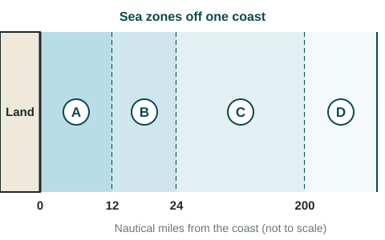

The Function of Political Boundaries
Boundaries are defined, delimited, demarcated and administered, and they are often disputed.
Part 1 · Hook
Why this matters
Part 2 · Before you start
What this builds on
Part 3 · Prerequisite check
Quick check before you start
1. What is a superimposed boundary?
- A boundary forced on an area by an outside power
- A boundary that follows a language line
- A boundary that no longer works
- A boundary drawn before settlement
Show the answer
Many African borders are superimposed.
- Correct: A boundary forced on an area by an outside power:
- A boundary that follows a language line:
- A boundary that no longer works:
- A boundary drawn before settlement:
2. What is territoriality?
- Trying to control people and things by claiming an area
- A state's legal right to rule
- The area of a state
- A narrow sea passage
Show the answer
Territoriality is the behavior of claiming space.
- Correct: Trying to control people and things by claiming an area:
- A state's legal right to rule:
- The area of a state:
- A narrow sea passage:
Part 4 · See it
See it first

Part 5 · Step by step
How it works, step by step
- States define a boundary in a treaty and delimit it on mapsthey know, in principle, where each one's territory ends
- They demarcate it with markers and administer it with crossings and rulesthe boundary controls how people and goods move, more or less strictly
- Rivers move, wording is vague, or resources lie under the lineboundaries are often disputed
Part 6 · Key ideas
Key ideas
- Boundaries are defined in words, delimited on maps, demarcated on the ground and administered day to day.
- Boundaries shape interaction: open ones (the Schengen Area) let people cross freely; closed ones, such as Korea's demilitarized zone, stop almost all contact.
- The Berlin Conference (1884 and 1885) set rules for European claims in Africa, leading to superimposed borders.
- The law of the sea (UNCLOS): territorial sea to 12 nautical miles, contiguous zone to 24, exclusive economic zone to 200, then the high seas.
Part 7 · Misconception
A common mistake
The wrong idea: A state rules its whole exclusive economic zone just as it rules its land.
What actually happens: Full rule reaches only 12 nautical miles (the territorial sea). In the exclusive economic zone, out to 200 nautical miles, the state owns the resources, but other states' ships may still sail through.
Part 8 · Check yourself
Check yourself
Exam-style questions. Anything you miss goes into your review queue.
Image
Sea zones off one coast

1. Which band in the drawing is the territorial sea, where the coastal state rules much as it does on land?
- Band A
- Band B
- Band C
- Band D
Show the answer
Under the law of the sea, the territorial sea reaches up to 12 nautical miles from the coast: band A.
- Correct: Band A: Right: Band A runs from the coast out to 12 nautical miles.
- Band B: Band B, from 12 to 24 nautical miles, is the contiguous zone.
- Band C: Band C lies inside the exclusive economic zone.
- Band D: Band D, beyond 200 nautical miles, is the high seas.
2. A fishing boat from another state is caught fishing without permission 150 nautical miles from this coast. In which band is it, and why does that matter?
- Band A, where foreign ships are banned from sailing
- Band D, where any state may fish freely
- Band B, where the coastal state checks for smuggling
- Band C, where the fish belong to the coastal state
Show the answer
Read the distances: 150 nautical miles is between 24 and 200, in band C. The exclusive economic zone gives the coastal state the rights to fish, oil, gas and minerals there.
- Band A, where foreign ships are banned from sailing: Band A ends at 12 nautical miles, and foreign ships may pass through it peacefully.
- Band D, where any state may fish freely: Band D begins beyond 200 nautical miles.
- Band B, where the coastal state checks for smuggling: Band B ends at 24 nautical miles.
- Correct: Band C, where the fish belong to the coastal state: Right: At 150 nautical miles the boat is inside the exclusive economic zone.
3. In which band may ships and boats of every state fish and sail freely, because it lies beyond every state's exclusive economic zone?
- Band A
- Band B
- Band D
- Band C
Show the answer
Band D lies beyond 200 nautical miles: the high seas, or international waters, where every state may sail and fish.
- Band A: Band A is the territorial sea, ruled by the coastal state.
- Band B: In band B the coastal state can enforce customs and immigration laws.
- Correct: Band D: Right: Beyond 200 nautical miles lie the high seas, open to all states.
- Band C: In band C the fish and seabed resources belong to the coastal state.
4. Two island states face each other across 280 nautical miles of sea. Each claims an exclusive economic zone of 200 nautical miles. How many nautical miles wide is the strip where their claims overlap?
Type a number. No calculator needed: work it out by hand, as on the exam.
Show the answer
Together the two claims reach nautical miles, but only 280 nautical miles of sea lie between them, so the overlap is nautical miles.
- Answer: 120
5. Place the zones of the law of the sea in order from the coast outward.
Sea zones from the coast outward
- Ring 1 (from the coast)
- Ring 2
- Ring 3
- Ring 4 (farthest out)
Pick a piece, then the place it belongs. Drag works too. Pick a filled place to take its piece back.
Show the answer
Territorial sea to 12 nautical miles, contiguous zone to 24, exclusive economic zone to 200, then the high seas.
- Ring 1 (from the coast): Territorial sea (to 12 nm)
- Ring 2: Contiguous zone (to 24 nm)
- Ring 3: Exclusive economic zone (to 200 nm)
- Ring 4 (farthest out): High seas
6. Inside most of Europe's Schengen Area, people usually cross between member states with no passport checks. How does this change what the boundaries do?
- The boundaries no longer exist on any map
- The boundaries now block most trade between the member states
- The boundaries have become demilitarized zones
- They still divide states but barely slow people down
Show the answer
Boundaries shape interaction. An open boundary in the Schengen Area lets people and goods flow freely, while a closed one like Korea's stops almost all contact.
- The boundaries no longer exist on any map: The boundaries are still on maps and in law.
- The boundaries now block most trade between the member states: Open crossings make trade easier, not harder.
- The boundaries have become demilitarized zones: A DMZ is a strip with no armed forces, like Korea's.
- Correct: They still divide states but barely slow people down: Right: The lines remain in law, but crossing them is easy.
Part 9 · Summary
Summary
Part 10 · Up next
What comes next
Part 11 · Connections